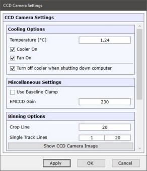

|
CCD 相机配置
|

冷却选项
温度
设置 CCD 芯片冷却单元的温度。
冷却器开启
开启或关闭冷却单元。
风扇开启
开启或关闭冷却风扇。
计算机关机时关闭冷却器
如果选中，冷却器在计算机关机时关闭。
否则相机保持冷却，可在计算机启动后立即使用。
其他设置
使用基线钳位
仅适用于支持基线钳位的相机。
如果选中，A/D 转换器偏移将被稳定。每秒最大光谱数将减少。
EMCCD 增益
仅适用于支持 EMCCD 放大的相机。
设置 EMCCD 模式的增益。
合并选项
合并选项用于裁剪和单轨测量模式。
请以如下方式设置参数：对于所有使用的光栅和光谱位置，信号位于配置的裁剪线或配置的单轨线范围内。使用校准光源和 CCD 相机图像检查参数。
裁剪线
定义在裁剪测量模式中应使用哪条 CCD 线。
单轨线
定义在单轨测量模式中应使用哪些线。
显示 CCD 相机图像
显示 CCD 相机图像，用于设置合并选项以及检查信号在相机上的位置。
仅供系统负责人使用。